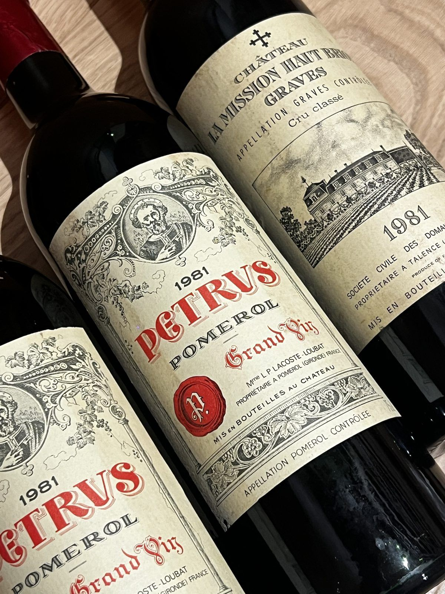

Exception
Vieux millésimes
Petrus, Château La Mission Haut-Brion, Château Latour… la cave conserve quelques flacons d'exception, sourcés au fil des années pour les grandes occasions. Chaque bouteille est choisie avec la même exigence que l'assiette qu'elle accompagne.